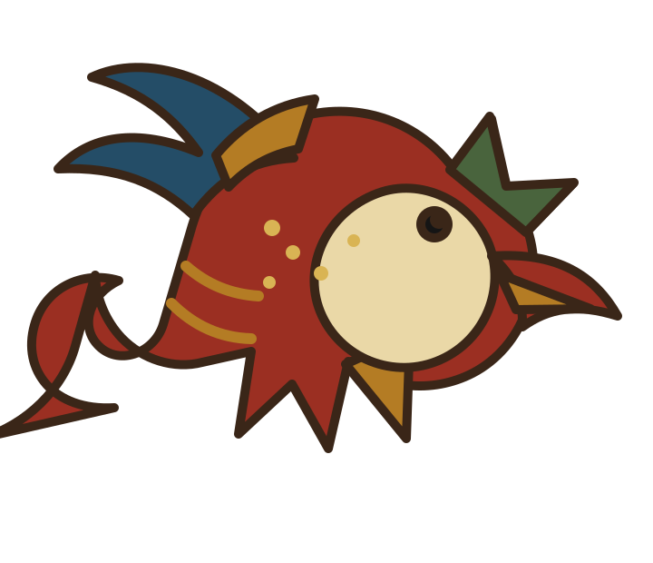
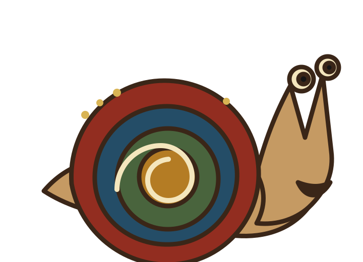
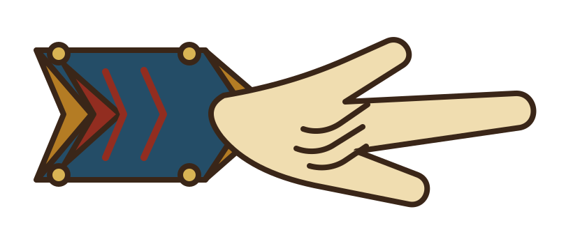
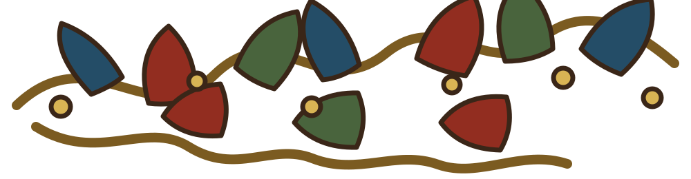
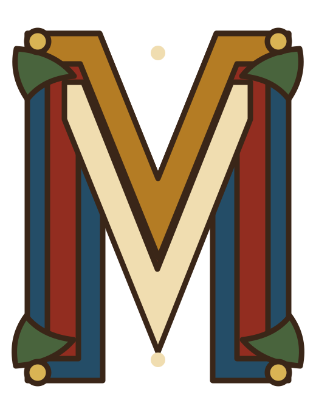
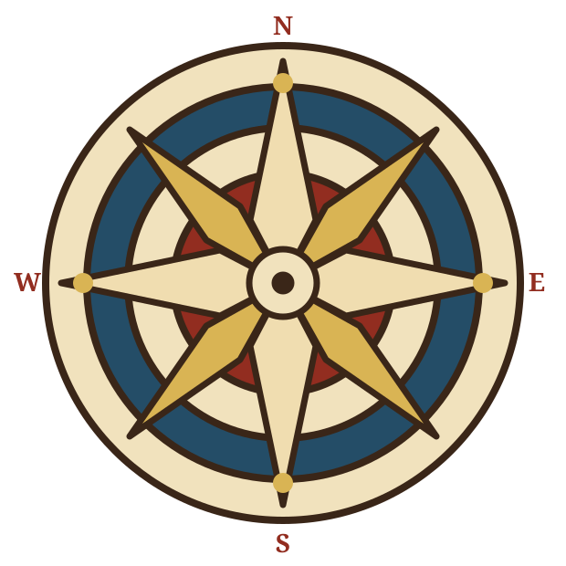
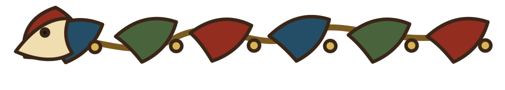
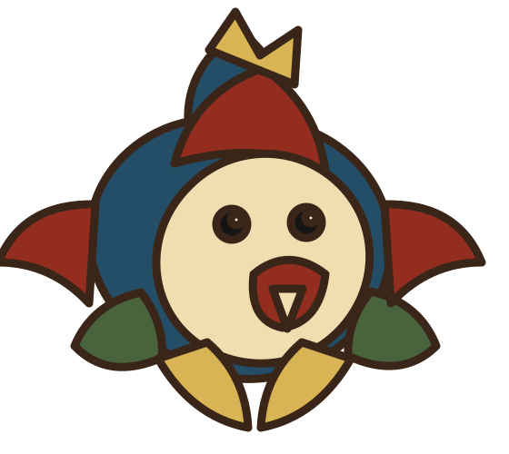

Native Medieval Asset Library
Original illuminated-manuscript artwork built specifically for Alto City Limits. Each asset is an independent transparent SVG, so dragons, snails, manicules, vines, initials, diagrams, borders, and grotesques can be positioned and scaled independently at different breakpoints.

Bestiary
dragon.svg
Marginalia
snail.svg
Manicule
manicule.svg
Flourish
vine.svg
Initial
initial-m.svg
Diagram
diagram-compass.svg
Border
border-dragon.svg
Grotesque
grotesque.svgThese are the first core assets. Additional initials, corners, creatures, diagrams, and border variants can be added without changing the Dark Ages page structure.